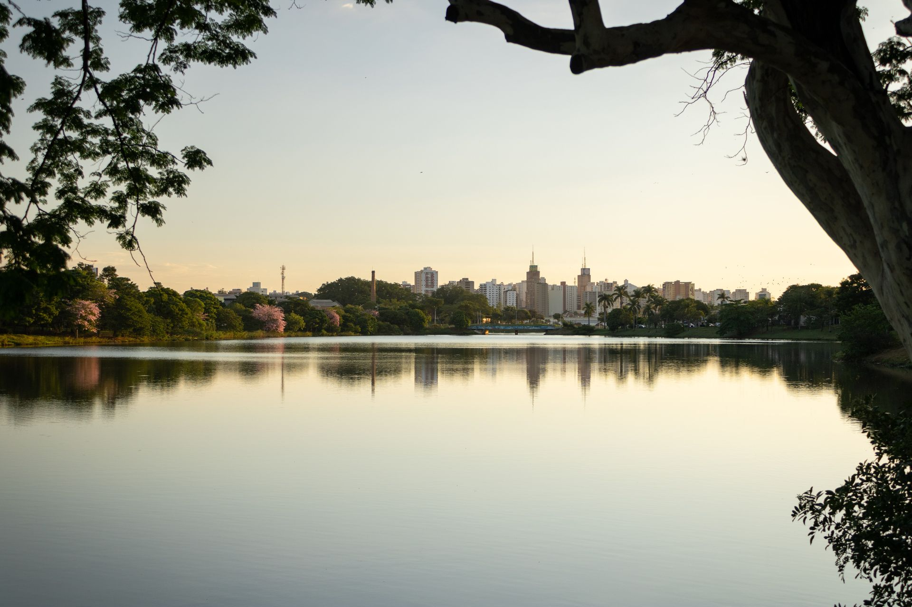
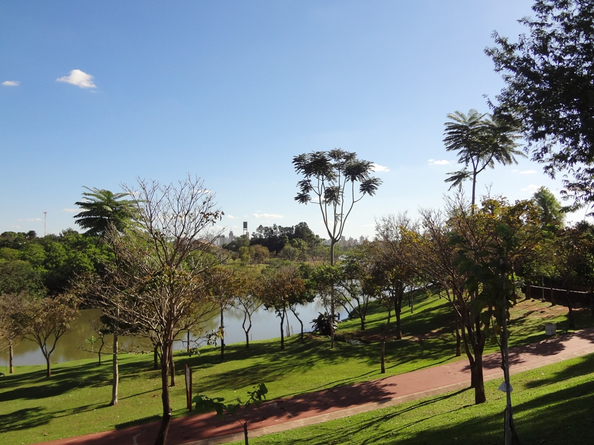

História da Cidade
Fundada em 19 de março de 1852 por João Bernardino de Seixas Ribeiro, São José do Rio Preto começou como um pequeno povoado no interior do estado de São Paulo. Com a chegada da ferrovia e a expansão da cultura do café, o município rapidamente se tornou um polo comercial e de serviços essencial para toda a região noroeste paulista.
Pontos Turísticos
A cidade se destaca por suas áreas verdes, lazer e arquitetura acolhedora:


Curiosidades
- As Capivaras: As capivaras que habitam as margens da Represa Municipal são um verdadeiro símbolo da cidade e muito queridas pelos moradores.
- Polo em Saúde e Educação: Rio Preto é reconhecida nacionalmente pela excelência de seus hospitais e centros universitários.
- Clima Típico: Conhecida pelo calor intenso durante grande parte do ano, proporcionando belos fins de tarde.
Localização no Mapa
Confira a localização de São José do Rio Preto no mapa interativo abaixo: